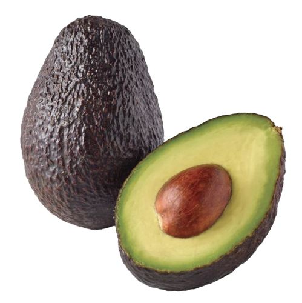
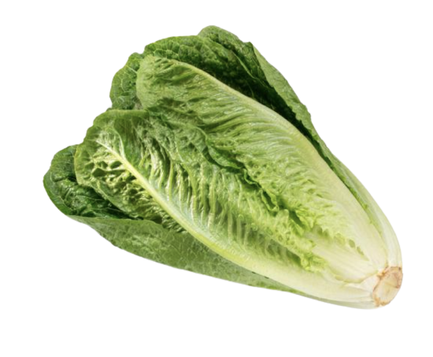
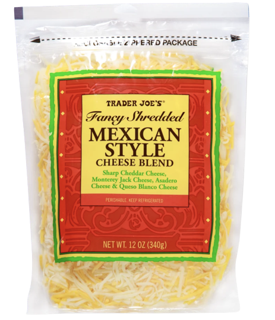

Taco Shells $3.50

Beyond Meat $6.00

Cooking Oil $5.00

Pico de Gallo $4.36

Avocado $1.99

Lettuce $3.89

Mexican Cheese $5.99

Taco Seasoning $1.50

Salt and Pepper $4.60
I really enjoyed the contrasting textures in this dish, which was the soft meat with the crunch of the taco shells. The flavors of the meat, along with the seasoning took me right back to Mexico. I am not the biggest fan of hard shell tacos, so I would prefer the soft shell ones instead. Additionally, the avocado felt kind of bland, so would change that into a guacomole instead. Overall, the dish brought a whole new level of flavor and textures which was great. I would score it an 8/10.